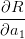
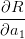

Tabela 3.4: Quadro comparativo.
| Método | Convergência | Erro | Critério de parada |
Bisseção | Linear |  |  |
( ) ) | |||
| Iteração | Linear |  |  |
| linear | ( ) ) | ||
Newton | Quadrática |  |  |
( ) ) | |||
Secante |  |
 |  |
Quando usamos métodos iterativos precisamos determinar um critério de parada. A Tabela 3.4 indica critérios de parada usuais para os métodos que estudamos neste capítulo.
| Método | Convergência | Erro | Critério de parada |
Bisseção | Linear | | |
| () | |||
| Iteração | Linear | | |
| linear | () | ||
Newton | Quadrática | | |
| () | |||
Secante | |
 | |
Observação 3.6.1. O erro na tabela sempre se refere ao erro absoluto
esperado. Nos três últimos métodos, é comum que se exija como critério de
parada que a condição seja satisfeita por alguns poucos passos consecutivos.
Outros critérios podem ser usados. No métodos das secantes, deve-se ter o
cuidado de evitar divisões por zero quando  muito pequeno em
relação à resolução do sistema de numeração.
muito pequeno em
relação à resolução do sistema de numeração.
E 3.6.2. Dê uma interpretação geométrica ao método das secantes. Qual a vantagem do método das secantes sobre o método de Newton?
E 3.6.4. Refaça o problema 3.2.7 usando o método de Newton e das secantes.
E 3.6.5. Seja dada uma função  duas vezes continuamente diferenciável.
Faça uma análise assintótica para mostrar que as iterações do método das
secantes satisfazem:
duas vezes continuamente diferenciável.
Faça uma análise assintótica para mostrar que as iterações do método das
secantes satisfazem:
 |
para aproximações iniciais  e
e  suficientemente próximas de
suficientemente próximas de  , onde
, onde
 .
.
Resposta. Seja  um função tal que
um função tal que  e
e  . Considere o processo iterativo do método das
secantes:
. Considere o processo iterativo do método das
secantes:


Subtraindo  de ambos os lados temos:
de ambos os lados temos:

Definimos  , equivalente a
, equivalente a 

Aproximamos a função  no numerador por
no numerador por

![ϵn[ϵn−1f′(x∗)+ϵ2n− 1f′′(2x∗)]− ϵn−1[ϵnf′(x∗)+ϵ2nf′′(x2∗)]
ϵn+1 ≈ -----------f(x∗+ϵn)−-f(x∗+-ϵn−1)------------
f′′(x∗)(ϵ ϵ2 − ϵ ϵ2)
= --2∗---n-n−1-∗n−1-n-
f(x + ϵn)− f(x +(ϵn−1) )
= 1f′′(x∗)--ϵnϵn−1-ϵn−1−-ϵn---
2 f(x∗+ ϵn)− f(x∗+ϵn−1)](main1747x.png)
Observamos, agora, que
![∗ ∗ [ ∗ ′ ∗ ] [ ∗ ′ ∗ ]
f(x +ϵn)− f(x +ϵn−1)≈ f(x )+f(x )ϵn − f(x )+f (x )ϵn−1
=f′(x∗)(ϵn − ϵn−1)](main1748x.png) | (3.7) |
Portanto:
 | (3.8) |
ou, equivalentemente:
 | (3.9) |